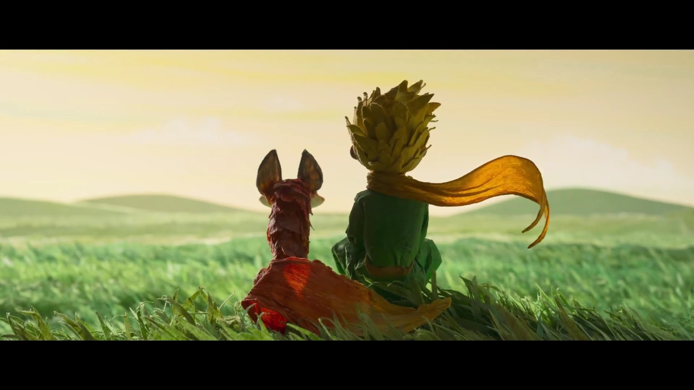
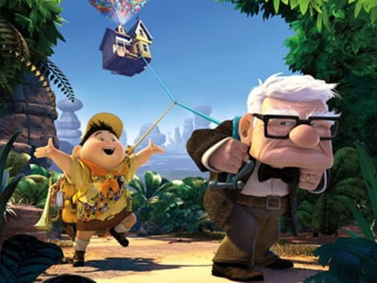

사랑 글귀

가령 오후 4시에 네가 온다면
나는 3시부터 행복해지기 시작할거야...
"세상에서 가장 어려운일이 뭔지아니?"
"흠... 글쎄요. 돈버는일? 밥먹는일?"
"세상에서 가장 어려운일은
사람이 사람의 마음을 얻는일이란다."
"네가 나를 기르고 길들이면 우린 서로 떨어질 수 있게 돼.
넌 나에게 이 세상에서 단 하나뿐인 사람이 돼."
- 애니메이션 'UP'中 -

"사랑해서 함께한 게 아니야.
더 사랑하려고 함께하는 거야"
"주인님의 현관 밑에 숨어있었어요.
왜냐하면 저는 주인님을 사랑하니까요"

"다른 사람을 지나치게 걱정하고 있는 것,
나는 그걸 '사랑'이라고 불러"

"100년 동안 당신을 모르고 사는 것보다,
당신을 알고 지금 죽는 게 더 나아요"